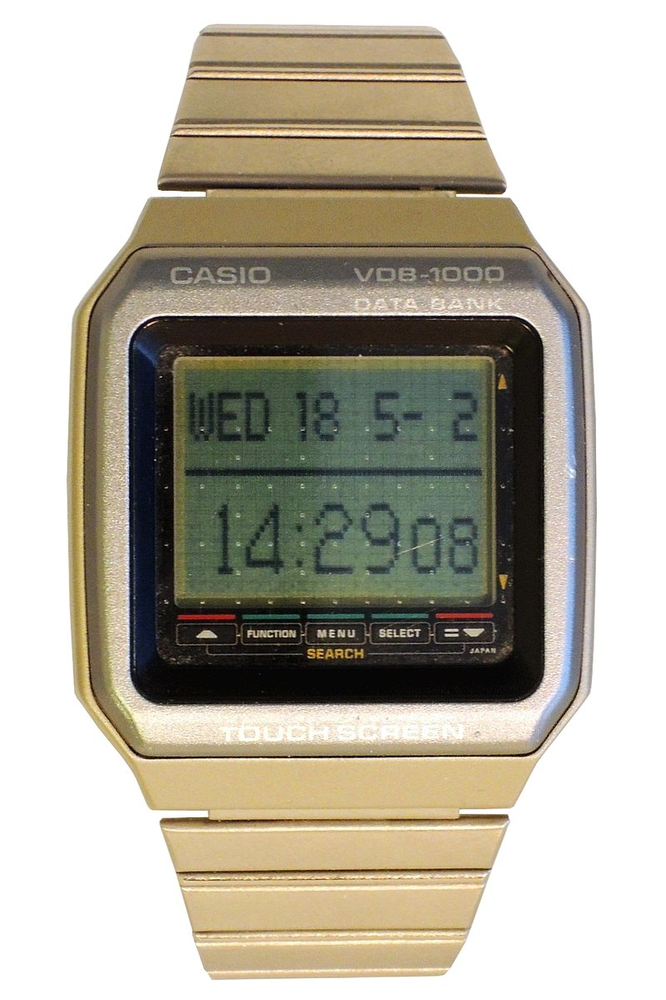

The Watch You Typed On
In 1991, Casio built a wristwatch whose entire face was a graphic touchscreen. You tapped letters directly into its databank — the same gesture vocabulary we now use to reply from our wrists, a full 24 years before the Apple Watch.

There is a watch on your wrist that you tap. Tap to check messages, tap to reply, tap to open an app. You probably do not think about the gesture very much: it is small, fast, and happens in a space about the size of a postage stamp. The idea that a wristwatch is also a touch surface you type on is, by now, ordinary.
It was not ordinary in 1991. The Casio VDB-1000 (module 658) was a Databank watch whose entire face was a graphic LCD with a resistive touchscreen layered over it. To enter a phone number, you did not press tiny buttons or navigate a menu with a scroll. You tapped the name into the glass — character by character, same gesture you now use to reply from your wrist, but in 1991.
The VDB-1000 belongs to Casio's Databank line, a series of watches that treated the wrist as a carryable memory device — phone numbers, schedules, notes — and it ran from the middle of the Databank era. Earlier models used physical buttons for data entry (the VDB-1000's own ancestor, the VDB-200, had a touch panel but a segmented LCD). The VDB-1000 was the one that made the leap to a fully graphic display with finger-touch entry on a 1991 wearable — a wrist-worn pocket organizer whose only keyboard was the image of a keyboard on the glass.
There is a specific strangeness in this that I want to hold still. A watch is the smallest viable wearable. A screen on a watch is the smallest viable readable surface. And in 1991, Casio decided that the right way to enter text on that surface was to touch individual letters directly with a fingertip — a fingertip that is often wider than the characters it is trying to press. The same problem that makes typing on modern smartwatches slightly fiddly was the same problem in 1991, and the VDB-1000 already had the same answer: you press anyway, and the machine registers the tap.
The museum's collection already tracks how small-memory devices evolved the input that fit them. The Toshiba LC-836MN Memo Note 30 (1978) squeezed names through a calculator keypad with multi-tap — the machine made you translate the alphabet into numbers because a calculator had no letters. The Seiko RC-1000 (1984) skipped the calculator form and put 2KB of RAM into a watch, but data entry happened on a desktop computer over RS-232: the watch wore the data but could not author it. The VDB-1000 closed that loop. A watch you could fill from the watch itself, by touching its face. The first wrist-worn touchscreen text-entry device in the collection — and the first time the gesture vocabulary of modern smartwatch typing was rehearsed on hardware you could actually buy.
Casio later produced a kanji-capable variant, the DKW-100, which was even stranger: a full character set on a watch face, also touch-entered. The VDB-1000 spent no time being a computer metaphor. It had no stylus, no menu system pretending to be a desktop, no attempt to look like a shrinking of a PC. It was a watch that already knew what a watch was. It just happened to let you touch the glass to remember a number.
A 1991 watch with a touchscreen you tapped with your finger. That is the whole story, and it is a story that took twenty-four years to become normal.